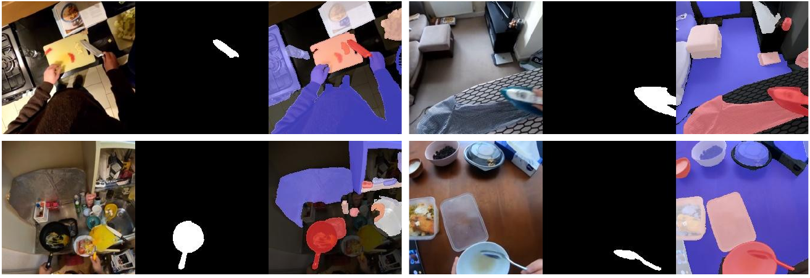
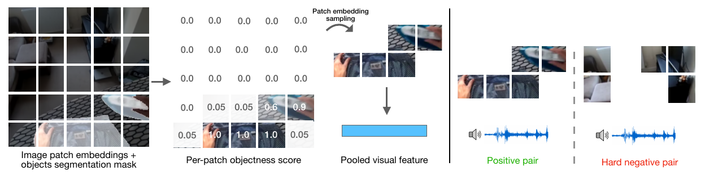

已发表 · ICCV 2025
Clink! Chop! Thud!
从真实交互中学习物体的声音
第三作者 · 佐治亚理工学院
听到切菜或物体碰撞的声音时，我们往往能判断哪些物体正在发生交互。这项工作研究如何让模型从第一视角视频中学到这种联系。

声音来自哪个物体？
刀碰到砧板时，画面里可能还有锅、瓶子和碗，但只有部分物体参与了这次发声。我们提出“发声物体检测”任务：给定交互的视频、声音和候选物体区域，判断哪些物体与声音有关。同时，我们也评估模型能否区分动作本身产生的声音和无关的背景声音。
让模型关注交互区域
训练数据中的物体掩码由手—物体交互检测与 SAM 2 自动生成，用来筛选视觉特征。模型结合预训练的槽注意力结构，在对比学习框架下对齐视觉、音频和语言。微调时，我们把同一画面中未参与交互的区域作为困难负样本，帮助模型区分发声物体与背景。

实验结果
发声物体检测基准使用 EPIC-KITCHENS 的 583 段视频和 Ego4D 的 572 段视频，真实物体由人工标注。如果得分最高的候选物体是实际参与发声的物体之一，就计为预测正确。
| 方法 | EPIC-KITCHENS | Ego4D |
|---|---|---|
| SoundingActions（经过微调） | 41.0 | 35.1 |
| 我们的基础模型 | 49.6 | 43.9 |
相较上述基线，准确率分别提高 8.6 和 8.8 个百分点。消融实验进一步分析了物体掩码和槽注意力各自的作用。
我参与的工作
我参与了物体掩码标注与特征处理流程的搭建，以及在 EPIC-KITCHENS 和 Ego4D 上的对比评估和消融实验。
评估范围
这项任务以已有的候选物体掩码为输入。如果候选检测器漏掉了发声物体，评估时会把对应的真实掩码加入候选集合。因此，这里的准确率衡量的是从候选物体中选出发声物体的能力，不包含从零发现物体或精确预测边界的全部过程。